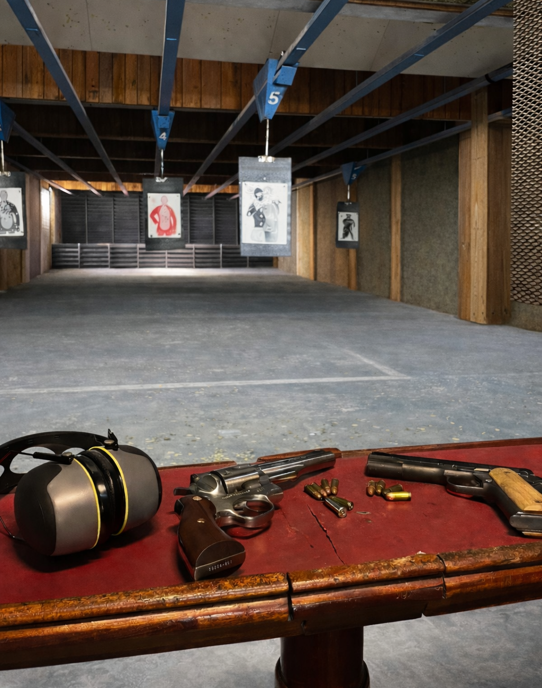

Club de tiro olímpico profesional ubicado en Morón, Buenos Aires. Ofrecemos trámites ante el RENAR, entrenamiento deportivo y competitivo e instalaciones de primer nivel.

El polígono cuenta con infraestructura preparada para la práctica del tiro deportivo, cumpliendo con las medidas de seguridad y condiciones necesarias para un desarrollo responsable de la actividad.
Nuestras instalaciones están abiertas para socios y el público en general de martes a sábados. Acercate, consultá sobre la gestion de la CLU y comenzá hoy mismo.
Consultar gestion →Atención para trámites RENAR: Martes de 10 a 19Hs
Consulta la disponibilidad de nuestros servicios.
Ver mas informacion sobre la formacion